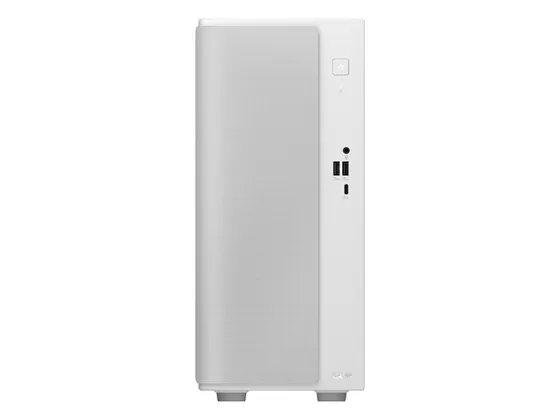
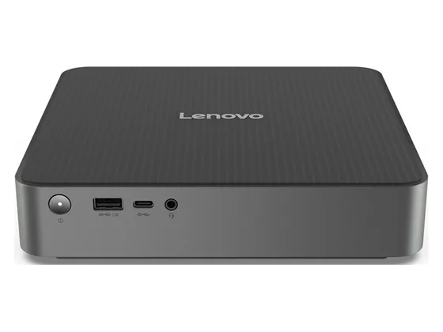
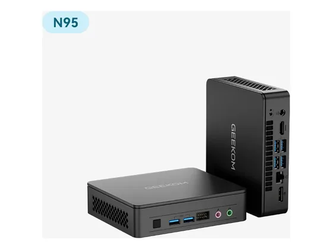
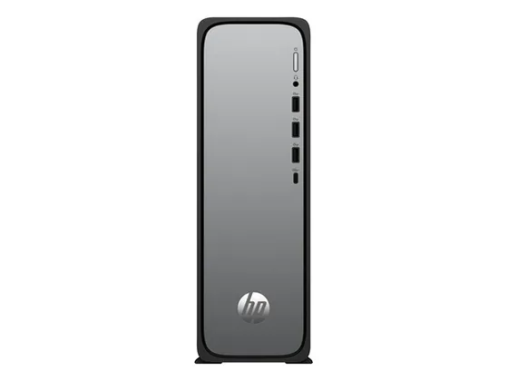

Asus V500 : avis, tests et prix
Le verdict en une phrase. Une petite tour au design soigné, correcte pour le travail quotidien ; son évolutivité reste limitée.
N° 7 sur 10 dans le top 10 Ordinateurs de bureau bureautique.

Pour qui ?
Vous voulez une petite tour soignée et silencieuse pour le travail quotidien.
Vous comptez la faire évoluer dans les années à venir.
Le consensus de la presse
Les tests recensés ne donnent pas de note chiffrée : nous renvoyons vers les articles plutôt que d'inventer une note. Ces notes portent sur la gamme : configurations ou générations proches de celle vendue aujourd'hui.
Où l'acheter
La configuration peut différer d'un marchand à l'autre : vérifiez la fiche avant d'acheter. Seuls les liens Amazon sont affiliés à ce jour ; les autres sont de simples liens directs. Aucun n'influence les notes ni le classement.
Tous les tests recensés
Chaque ligne renvoie vers le test d'origine. Les notes sont converties sur 10 ; « test » signale un article sans note chiffrée. Notre méthode.
- Consumer Reportstest
- Pokdetest
Source du relevé : Test Consumer Reports.
Les alternatives pour le même usage
Tout le top 10 →
Lenovo IdeaCentre MiniUn mini-PC de grande marque, compact et suffisant pour la bureautique, avec Thunderbolt 4. La partie graphique est en retrait. N° 6 · Le moins cher
Geekom Mini Air12 LiteLe mini-PC à tout petit prix pour un usage basique : web, bureautique, vidéo. Compact et élégant, mais vite à court de puissance. N° 8 · Le plus discret
HP OmniDesk SlimUne tour fine qui se glisse sous un écran, suffisante pour le web, les mails et la bureautique.Questions fréquentes
Que pense la presse de l'ordinateur Asus V500 ?
2 tests presse recensés, sans note chiffrée. Une petite tour au design soigné, correcte pour le travail quotidien ; son évolutivité reste limitée.
Quels sont les points faibles relevés par les tests ?
Évolutivité limitée ; Pas de carte graphique dédiée sur les premiers prix.
À qui s'adresse le modèle Asus V500 ?
Vous voulez une petite tour soignée et silencieuse pour le travail quotidien. À éviter si : vous comptez la faire évoluer dans les années à venir.
Où l'acheter, et à quel prix ?
Prix relevés le 02/10/2026 : 662,92 € chez Amazon ; 949,99 € chez Darty. Les prix changent vite et la configuration peut différer d'un marchand à l'autre : seul le prix affiché par le marchand fait foi.